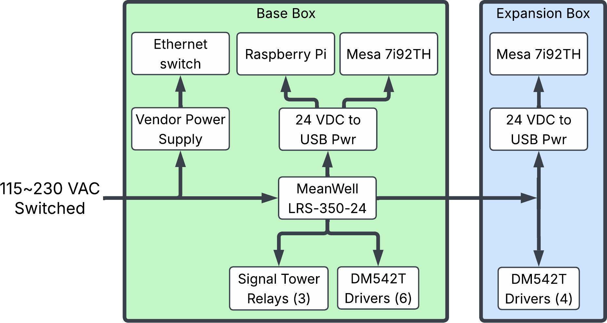
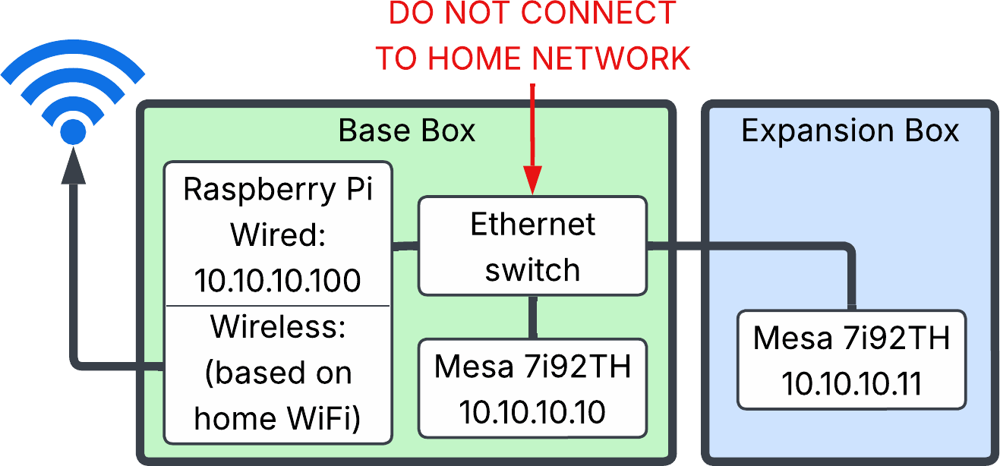
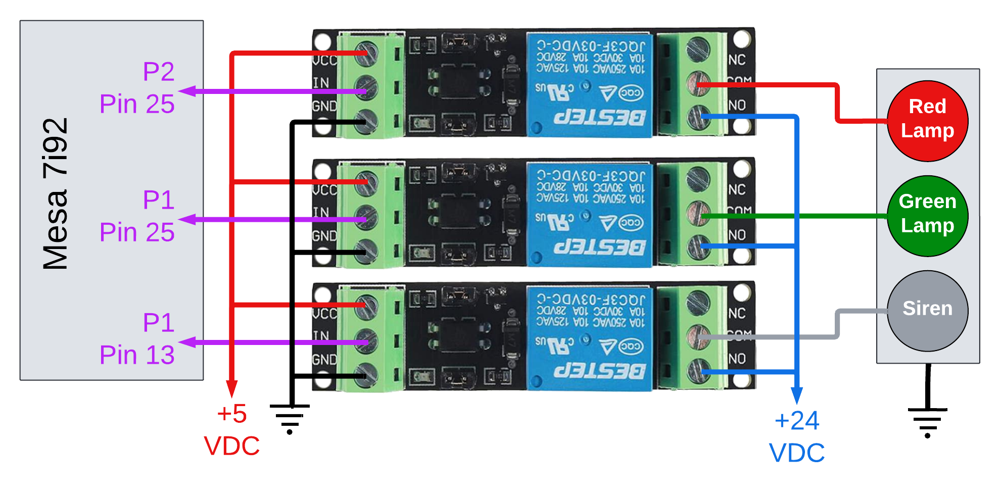

Building a Rosetta: 1. Parts · 2. Common build steps · 3a. With the Rosetta PCB · 3b. Without the PCB · 4. Software
This page is for building the boxes without the Rosetta circuit board. Each Mesa 7i92TH card's 26-pin headers are brought out to IDC26 breakout boards (26 screw terminals on a DIN rail) with IDC26 ribbon cables, and everything else is wired to those terminals.
The software is exactly the same as for a machine built with the Rosetta PCB: it only knows the card's pins, so the wiring below must match it.
Before starting:
- Get the parts marked Both and Without PCB on Hardware Parts.
- Do the common build steps (DM542T switches, Mesa jumpers, network and power).
Terminal numbers below are the card's 26-pin header pin numbers, which match the breakout board's terminal numbers when the ribbon cable is fitted the right way round (the red stripe on pin 1 at both ends). Mesa's pin file (7i92t_Rosetta.pin) numbers the same pins differently, as a 25-pin plug would - don't wire from it. The full map is on Mesa 7i92TH Pin Mapping.
|
|
Power Connections

|
|
Network Connections

|
|
Base Box
Two breakout boards: one on the card's P2 header and one on P1.
Stepper motor drivers (channels 00 - 05)
| Channel | Breakout Board | Breakout Board Terminal | |||
| Step to PUL+ | Dir to DIR+ | Enable to ENA+ | Common to PUL- DIR- ENA- | ||
| 00 | P2 | 1 | 2 | 4 | 10 |
| 01 | P2 | 5 | 6 | 8 | 10 |
| 02 | P2 | 9 | 11 | 15 | 10 |
| 03 | P2 | 17 | 19 | 23 | 10 |
| 04 | P1 | 1 | 2 | 4 | 10 |
| 05 | P1 | 5 | 6 | 8 | 10 |
Limit jacks, E-stop button and signal tower
| Function | Breakout Board | Breakout Board Terminal | Other wire to |
| Limit Jack 1 | P2 | 3 | GND terminal |
| Limit Jack 2 | P2 | 7 | GND terminal |
| Limit Jack 3 | P2 | 13 | GND terminal |
| E-stop button | P1 | 21 | GND terminal |
| Signal tower - Relay Module 1 (red light) | P2 | 25 | Relay Module 1 - IN |
| Signal tower - Relay Module 2 (green light) | P1 | 25 | Relay Module 2 - IN |
| Signal tower - Relay Module 3 (siren) | P1 | 13 | Relay Module 3 - IN |
Other terminals
- GND: P2 terminals 10, 12, 14, 16, 18, 20, 22, 24; P1 terminals 10, 12, 14, 16.
- 5 V: P1 terminals 18, 20, 22, 24 (with the card's W3 jumper up). Never connect these to a GND terminal or to the 24 V supply. Whether they can power the three relay modules is To be confirmed.
- Leave unconnected: P1 terminals 9, 11, 15, 17, 19, 23 (they drove channels 06 and 07 on the earlier 8-channel boxes) and terminal 26 on each header.
- Spare inputs: P2 terminal 21; P1 terminals 3, 7.
Expansion Box
One breakout board, on the expansion card's P2 header. Its P1 header isn't used.
Stepper motor drivers (channels 06 - 09)
| Channel | Breakout Board | Breakout Board Terminal | |||
| Step to PUL+ | Dir to DIR+ | Enable to ENA+ | Common to PUL- DIR- ENA- | ||
| 06 | P2 | 1 | 2 | 4 | 10 |
| 07 | P2 | 5 | 6 | 8 | 10 |
| 08 | P2 | 9 | 11 | 15 | 10 |
| 09 | P2 | 17 | 19 | 23 | 10 |
Limit jacks
| Function | Breakout Board | Breakout Board Terminal | Other wire to |
| Limit Jack 4 | P2 | 3 | GND terminal |
| Limit Jack 5 | P2 | 7 | GND terminal |
| Limit Jack 6 | P2 | 13 | GND terminal |
Other terminals
- GND: P2 terminals 10, 12, 14, 16, 18, 20, 22, 24.
- Leave unconnected: terminal 25 and terminal 26.
- Spare input: terminal 21.
|
|
Connecting a DM542T driver
Each driver has three signal pairs. Set its 5V/24V switch to 5V first (see common steps).
| DM542T terminal | Connect to |
| PUL+ | the channel's Step terminal |
| DIR+ | the channel's Dir terminal |
| ENA+ | the channel's Enable terminal |
| PUL-, DIR-, ENA- | joined together, then to a GND terminal on the same breakout board - terminal 10 (the Common column above). All the drivers on one breakout board can share that terminal. |
On the P1 board, terminals 18, 20, 22 and 24 are 5 V, not GND - never connect the drivers' - terminals to them.
|
|
Limit switches and E-stop button
- Wire a normally closed switch between its terminal and a GND terminal. The card's pull-up makes an open switch (tripped, broken or unplugged) read as tripped. No other parts are needed.
- Limit switch jacks are GX-12/2, the E-stop button jack is GX-16/2. See the User Manual's Limit Switch Cabling and E-Stop Button Cabling (User Manual).
|
|
Signal tower
A breakout board has no relays, so three separate single-relay modules (part 1260) switch the tower: Relay Module 1 the red light, Relay Module 2 the green light and Relay Module 3 the siren.

Signal Tower Relay Connections
Each module is wired the same way:
| Relay module terminal | Connect to |
| VCC | +5 VDC |
| IN | its breakout board terminal (table above): Relay Module 1 - P2 terminal 25; Relay Module 2 - P1 terminal 25; Relay Module 3 - P1 terminal 13 |
| GND | a Mesa GND terminal on a breakout board - P1 terminal 12 (all three modules can share it) |
| COM | its lamp or the siren |
| NO | +24 VDC from the power supply (all three modules) |
| NC | not connected |
- Two separate grounds: the modules' 5 V side (VCC, IN, GND) uses the Mesa card's ground, as above. The tower's 24 V side does not: the tower's common wire goes to the GND of the 24 VDC power supply, never to a breakout board terminal.
- Each module must switch on when its input is pulled low (a "low-level trigger" module). The card holds its pins high whenever LinuxCNC isn't running, so a high-level module would turn the tower on at start-up and after shut-down.
- See also Signal Tower Relays.
Next: Software Installation and Setup